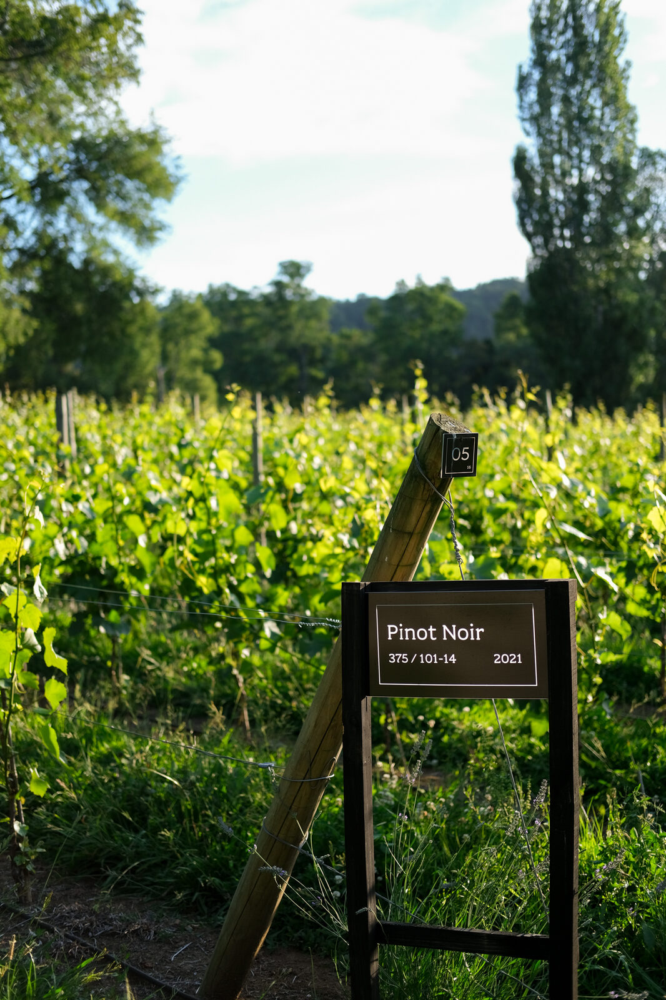
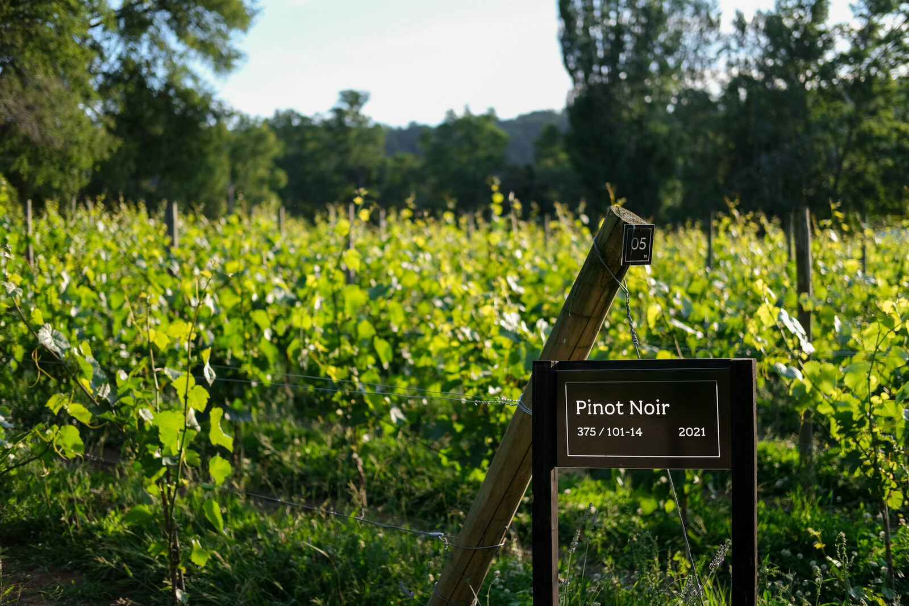
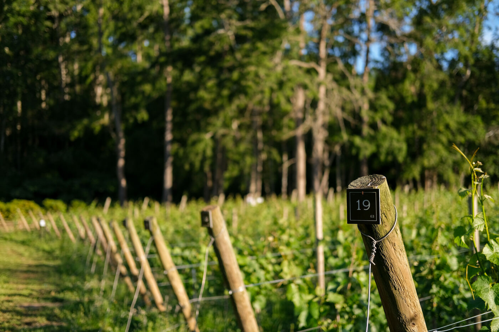
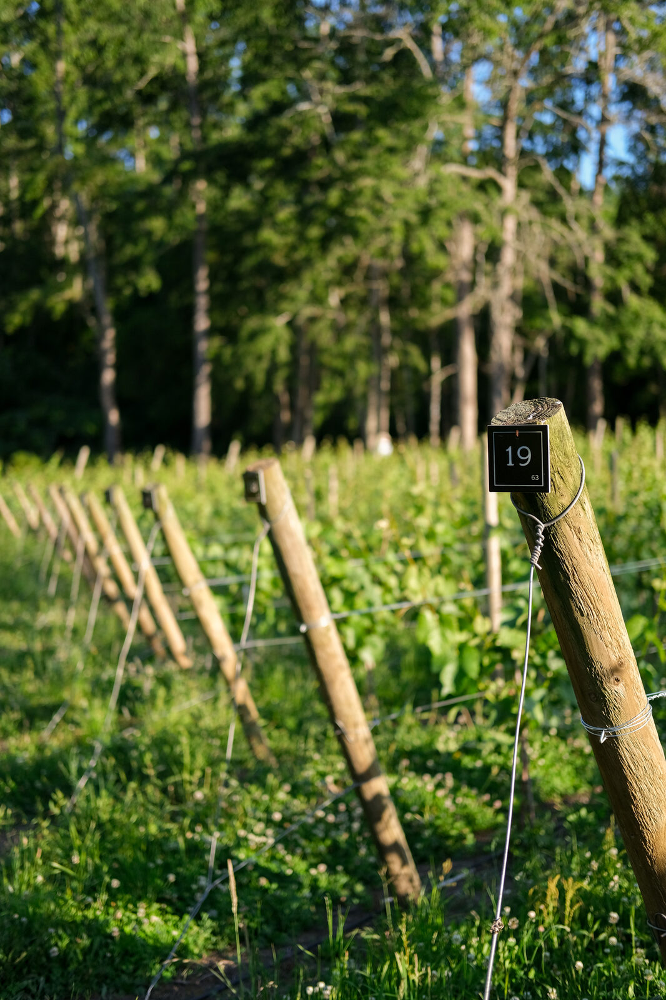
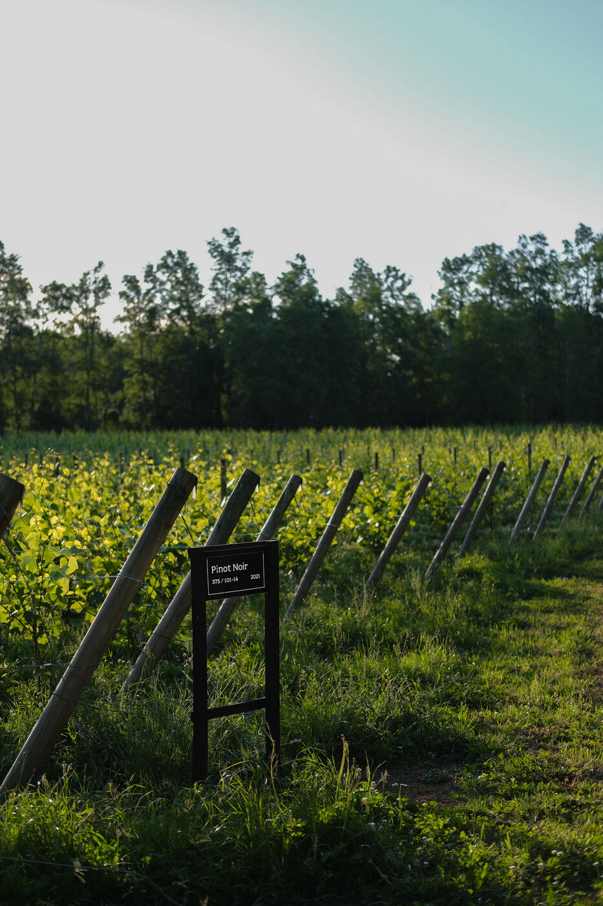
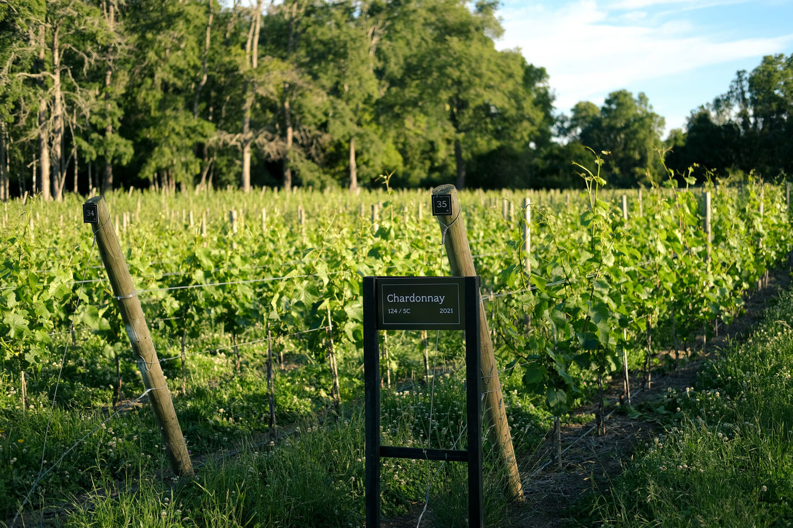

Sistema de letreros para la identificación de hileras y sectores según cepa, año, injertos y portainjertos. Se fabricaron en acrílico para garantizar su durabilidad ante el paso del tiempo y las exigencias climáticas de la zona.